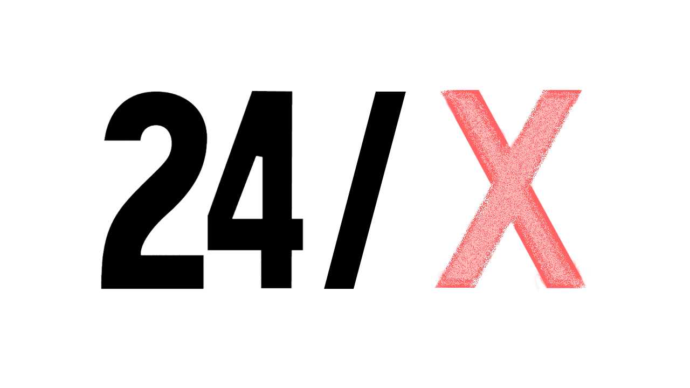

NYUAD INTERACTIVE MEDIA PRESENTS

February 12-13, 2016
NYUAD Arts Center Rm 006
Final Presentations - Saturday the 13th 4:00PM-6:00PM
THE EVENT
In the spirit of Rhizome’s Seven on Seven and Experiments in Art and Technology’s “9 Evenings”, NYUAD Interactive Media presents 24/X.
24/X is an event where 10 students from diverse disciplines will come together for 24 hours to create something new.
In teams of 2, participants will collaborate on an original project of their choice - a game, a performance, a poem, a sculpture, a mobile app - it’s up to the team and their imaginations to decide!
After being introduced to each other, each pair will have 24 hours to come up with an idea, prototype it, and present their project to the NYUAD community. Teams will share their process and reflections on the experience.
Faculty mentors will be on hand throughout the event to provide support.
THE PARTICIPANTS
ALEJANDRA TREJO
Freshman
Computer Science & Film
Interests: Design, Wearables, & Capoeira
X
KRISHAN MISTRY
Senior
Literature & Creative Writing
Interests: Fashion, Food, & Web Development
DEAN SHAFF
Senior
Physics & Math
Interests: Machine Learning, Noise, & Cycling
X
SEBASTIAN ROJAS CABAL
Junior
SRPP & Economics
Interests: Journalism, Media, & Comics
ISHANI SEN
Freshman
IM & Psychology
Interests: Poetry, Extreme Sports, & Horror Films
X
LUIS MORALES-NAVARRO
Senior
Film/New Media & Creative Writing
Interests: Horses, Cats, & Weimarners
JIWON SHIN
Senior
Visual Arts & Computer Science
Interests: Interactive Media & Cats
X
LEVAN ASATIANI
Sophomore
Mechanical Engineering
Interests: Languages, Music, & Outer Space
LAMA AHMAD
Freshman
Computer Science & SRPP
Interests: Economic and Social Development
X
NIA WILSON
Senior
Theater & Literature
Interests: Games, Gender, & Cultural Studies
-
THE MENTORS
ALEXIS GAMBIS
Biology & Film
ATTILIO RIGOTTI
Games & Theatre
AYSAN CELIK
Theatre
BANA KATTAN
Art Curation
DIANA CHESTER
IM & Music
GOFFREDO PUCCETTI
Visual Arts & Design
MALLORY ROBERTS
Physics
JIM SAVIO
Creative Writing
OMAR SHOUKRI
Music & Film
24/X has been organized by the NYUAD INTERACTIVE MEDIA PROGRAM and AMANDA HOPE MACARI.